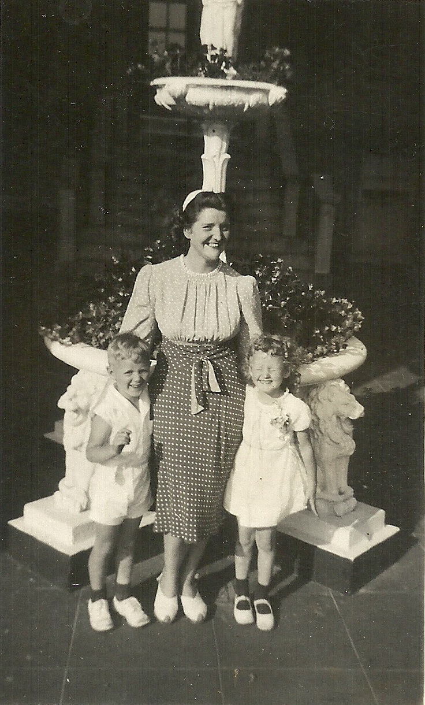
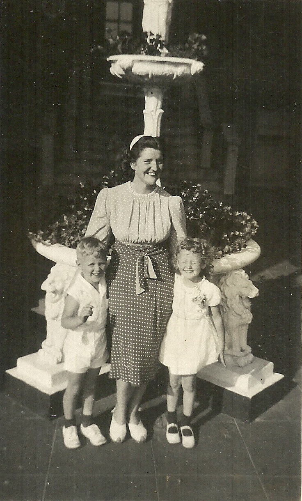

In Loving Memory of Edna Jane Keeley
In Loving Memory of Edna Jane Keeley
In Loving Memory of Edna Jane Keeley
In Loving Memory of Edna Jane Keeley

August 21 1934, Edna Jane Keeley was born to Bernard and Edna Keeley in Manhattan, NY and would become the first born of four siblings: Tom, Barney, Helene and Jim. Their family moved to The Bronx a few years later.

 



She was many things: bright, polite, inquisitive, tough, fun-loving, hard-working and happy.


In 1958, Edna married William Daly and gave birth to a son, Vincent.


Edna moved from her life in The Bronx to Laconia, NH in 1982 to be close to her son and his family. She adjusted to her new way of life, walking to work every day and making new friends - arguably her greatest skill. Edna was a social butterfly. Never afraid to speak up, ask questions, include strangers around her in a discussion. Her lack of fear and ingrained need to connect with others was such a big part of her. Edna was resilient, adjusting to her circumstances yet being strong enough to set boundaries. She would laugh things off and move on. She wanted to work, but the time came for retirement.


In 2008 Edna moved to Delaware to live with her brother Barney and then to Plainfield, NH in 2011 to live with her son Vincent and daughter-in-law Marian.


One of the most important aspects of Edna's life was her church. She attended Christ Community Church and was as involved as possible. She loved being with the people there, she loved helping out with the volunteer room and organizing anything needed. Edna was always deeply religious and had a personal relationship with God.

Somehow it seems wrong to honor Edna's life without mentioning her favorite things. If you knew Edna you knew about her love for reading and chocolate ice cream. She loved many foods but fried fish and burgers were big on that list. She LOVED chocolate cream pie. Another love of her life was a bird named Tweety who was her little companion for many years.


One thing is for sure: she loved us fully.